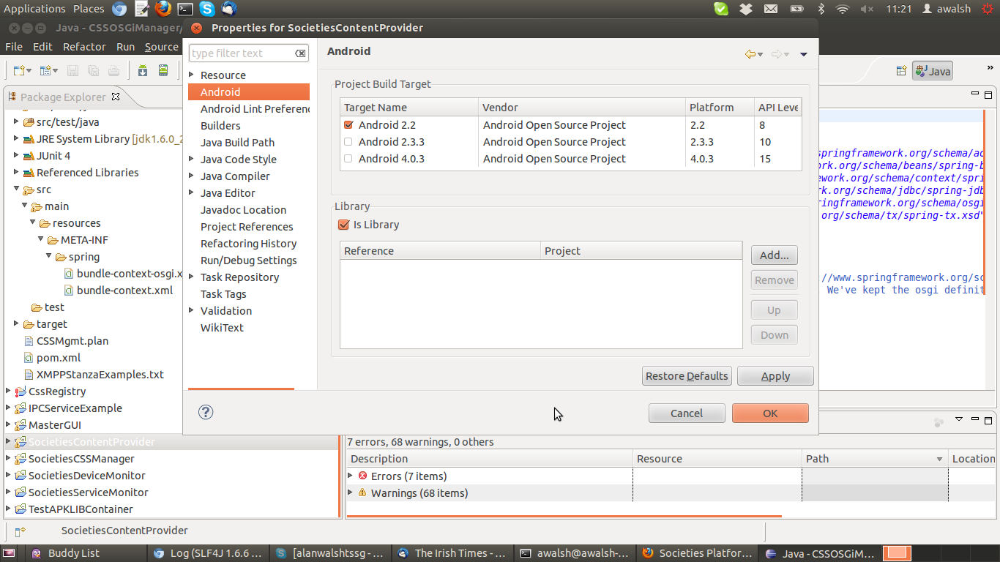

Android Component Development¶
In order to allow the greatest amount of assembly flexibility and allow each developer(s) to have as independent a development environment as possible, the use of APKLIBs is being promoted with Societies Android development. This process is already in place with the current Android components included in the Android Societies Client app.
APKLIBs and JARs¶
APKLIBs (APK libraries) are the Android way of building discrete components that can then be assembled into Android projects (cf. http://wiki.ict-societies.eu/index.php/WP4_Client_Framework_Team#Difference_between_a_JAR_and_an_APK_Library). In order to create an Android APKLIB project or convert an existing Android APK project using the Eclipse ADT use the following steps:
- Create an new Android project or select an existing one
- Highlight the project within the Project Explorer Window and right click for the context sensitive menu and select the bottom entry, Properties.
- Select the Android properties and the following screen should appear:

Click on the "Android Library" button and the project is now an Android APKLIB project. It cannot be deployed to an AVD or test device